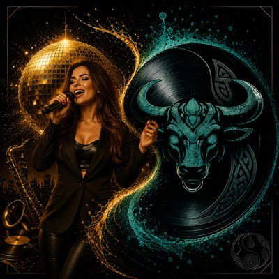

Accueil › Univers › TESCLAR
Univers de FrancislArtIste
TESCLAR
TESCLAR est l'univers électrique de FrancislArtIste : des grooves jazz-funk, des pulsations électro et des clins d'œil bossa, entre élégance et énergie de piste de danse. L'album Beyond the Disco (juin 2026, 15 titres) en est la vitrine, prolongé par le single Electric surge et la vidéo Guru au gourou.
Beyond the Disco

- Subnature 3:10
- Enjoy the day 3:48
- Little Beettle 5:18
- Build my Dream 4:26
- Guru au gourou 7:10
- Austral Adventure 2:19
- Born on the Dancefloor 4:38
- Susurros en la Piel 4:10
- Mama 4:18
- Electric Surge 4:01
- Into Your Eyes 3:29
- Pegadita a Mí 3:29
- Shine for me 4:37
- Butterfly 5:49
- Subnature out 2:59
Electric surge (TESCLAR Universe)
En vidéo : Guru au gourou
 ▶ Regarder sur YouTube
▶ Regarder sur YouTube